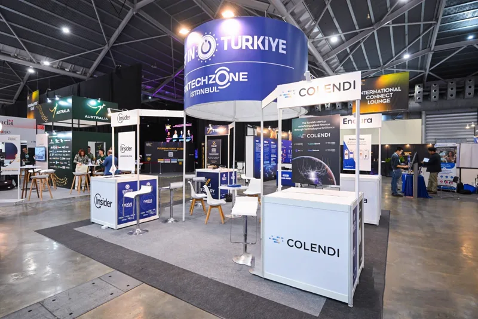

ADIM 01
Kurumsal Başvuru
Kurumsal paydaşların program başvuruları alınır ve seçim yapılır.

İstanbul Finans Merkezi'nde faaliyet gösteren fintek teknoparkı. Girişimciler, finansal kurumlar, düzenleyiciler, hizmet sağlayıcılar, danışmanlar ve yatırımcılar için kümelenme odaklı programlar.
Ülkemizin tüm fintek ekosistemine ulaşacak çeşitli programlarla bir fintek kümelenmesi inşa ediyoruz.
Ülkemizden global pazarlara, hinterlandımızda yer alan ülkelerden Türkiye'ye girişim transfer etmeyi hedefleyen bir stratejiye sahibiz.
Yeni nesil bir teknopark olarak fintek odaklı, dijital programlarla büyümeyi destekleyen modern bir ekosistem sunuyoruz.
Regülasyon konusunda kamu ile, rekabetçilik anlayışının inşasında ise bankacılık sektörü ile fintekleri buluşturmayı planlıyoruz.
İFM ve TGB kanun ve mevzuatlarının sunduğu fırsatlarla finteklerin entegrasyonuna katkı sağlıyoruz.


Kurumsal şirketlerin ihtiyaçlarını startup'ların yenilikçi çözümleriyle buluşturan, İSTKA destekli program. Proje 2026 sonuna kadar devam edecek.
Kurumsal paydaşların program başvuruları alınır ve seçim yapılır.
Kurumsal paydaşların teknoloji ve inovasyon alanındaki ihtiyaçları belirlenir.
Kurumsal paydaşları, startup iş birliğine ve inovasyon yeteneklerini geliştirmeye hazırlamak için eğitim ve toplantılar gerçekleştirilir.

Hızlandırma programına ve iş birliğine hazır, kurumsal ihtiyaçlara yönelik çözüm geliştiren fintekler programa başvuruda bulunur.
Doğru startup ile doğru kurumu “Üçlü Protokol” ile bir araya getirerek iş birliği ortamı oluşturulur.
Startuplara iş fikirlerini geliştirmek ve kurumsal entegrasyona hazır hale getirmek için eğitim ve mentorluk süreci ile destek sağlanır.
Girişimler, kurumsal paydaşların sandbox ortamına entegre edilerek, ihtiyaca yönelik çözümler üreterek pilot uygulamaları gerçekleştirir.
Başarılı olan projeler yatırımcı ve kurumlarla final sahnesine çıkarılarak yatırıma erişim sağlanır.
Bu yayın, İstanbul Kalkınma Ajansının desteklediği “İş Birliği İstanbul – Kurumsal Şirketler ile Startuplar Arası İş Birliklerini Güçlendirme Mali Destek Programı” kapsamında hazırlanmıştır. İçerik ile ilgili tek sorumluluk Fintech Zone İstanbul'a aittir ve İstanbul Kalkınma Ajansı ile Kalkınma Ajansları Genel Müdürlüğü'nün görüşlerini yansıtmaz.
Programlar girişimciler, finansal kurumlar, düzenleyiciler (kamu kurumları), hizmet sağlayıcılar, danışmanlar ve yatırımcılar dahil olmak üzere tüm fintek ekosistemi ve paydaşlarını desteklemek ve birbirine bağlamak için hayata geçirilecektir.

Girişimcilerin ve yenilikçilerin, ulusal ve uluslararası ağlarla buluştuğu, destek ve kaynaklarla donatılmıştır.

Fintek girişimlerinin inovatif ürünlerini gerçek dünya koşullarında test etmelerine olanak tanıyacak, regülasyonlara uyumlarına yardımcı olacaktır.

Türk fintek ekosistemini uluslararası pazarlara açarak, yerel girişimlerin küresel rekabetçiliğini artırmayı ve yabancı girişimlerin Türkiye'de filizlenmesini sağlayacaktır.

Öğrenciler, girişimciler, akademisyenler ve finans sektörü profesyonellerini hedef alarak, fintek alanında bilgi ve beceri gelişimine katkıda bulunacaktır.

Fintek ekosisteminin çeşitli paydaşlarını birleştirerek bilgi paylaşımı, iş birlikleri ve ağ oluşturma fırsatları sunacak ve katılımcılara yeni bakış açıları kazandıracaktır.

Fintek ekosisteminin kapsamlı bir şekilde anlaşılmasını ve sektörel bilginin geliştirilmesini hedefleyen yayınlar sunacaktır.

Fintek ekosisteminin dinamiklerini kavramak ve finteklerin veriye dayalı karar alma süreçlerine yardımcı olacaktır.

Fintek girişimlerine performanslarını objektif kriterler temelinde değerlendirme ve gelişim alanlarını belirleme imkanı sunacaktır.

Çalıştay kapsamında; kurum içi inovasyon ile girişim çevikliğinin doğru zeminde nasıl buluşturulabileceğini, PoC (Kavram Kanıtlama) süreçlerinden ticarileşmeye uzanan yolun nasıl hızlandırılabileceğini ve gerçek anlamda kazan-kazan yaklaşımı sunan katma değerli iş birliği modellerinin dinamiklerini ele aldık.
Katılımcılar: Visa Türkiye, Craftgate, Vakıf Katılım, Ziraat Teknoloji, Architecht, Paynion Bilişim A.Ş., Zanha Grup, Kuveyt Türk Katılım Bankası, Matriks Finansal Teknolojiler ve İstanbul Kalkınma Ajansı (İSTKA).
Fintech Zone bünyesinde yer almak isteyen Ar-Ge proje sahipleri; Ön Başvuru, Başvuru ve Değerlendirme, Kabul ve Sözleşme aşamalarını tamamlayarak teknoparka dahil olur.
gece charcoal, sinematik. Lava Red ve Butterscotch vurgu. DM Serif beyaz.
Three.js sahnesi; 4K'dan büyütülmüş kampüs videosu (1440 px kare) merkezde, logonun iki kırmızı yayı ve iki yörünge halkası uzayda döner; fare kamerayı oynatır, kaydırma sahneyi geri çeker.
ekran sabitlenir, kaydırdıkça madde ve fotoğraf değişir (GSAP ScrollTrigger).
dikey kaydırma yatay tura dönüşür; resmi sekiz adımlı proje yol haritası ve takvim tarihleri.
üçlü yay carousel: sekiz kümelenme programı, resmi açıklamalarıyla. İç sayfa: fotoğraf içinden açılan haber; paralaks.
Hareket azaltma ayarında sahneler durur, içerik tam görünür. Mobilde 3D sahne soluklaşır, yatay tur dikeye döner.